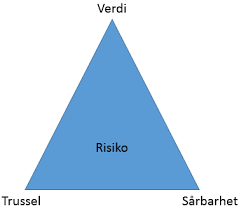

Trussler i digitalrommet
Våres stadig økning av digitalisering, øker og faren for trusler på områder som vi tidligere ikke trengte å bekymre oss for
Sårbare digitale verdikjeder
Sammensatte og komplekse digitale verdikjeder er sårbare. Når feilene utløses, rammes ofte flere områder samtidig. Sammenhengene mellomde forskjellige verdikjedene er ofte ikke synlige før en feil intreffer.

Risikotrekant
Risikoen for angrep blir mindre hvis en av de tre faktorene- verdi, sårbarhet eller trussel- kan settes lavere. Reduseres sårbarheten, reduseres risikoen.